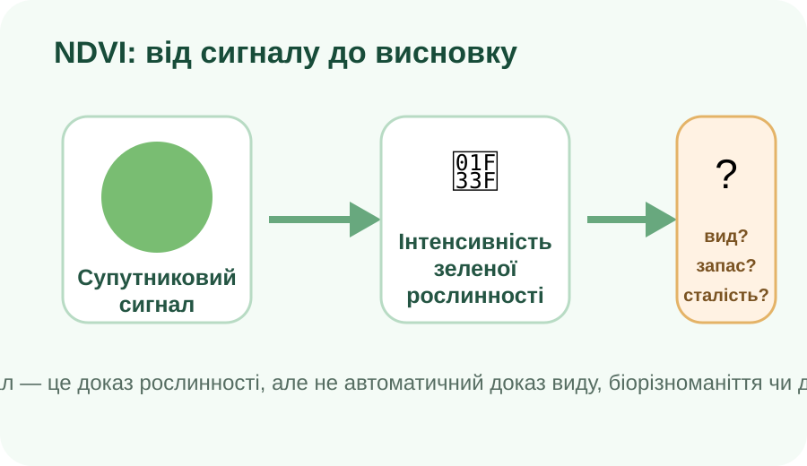

Ресурс чи просто організм?
Біологічним ресурсом організм стає тоді, коли людина реально використовує його або продукти його життєдіяльності. Визначте найкращу відповідь.
🌻 Соняшник
Олія, корм, насіння, сировина.
🌲 Сосновий ліс
Деревина, гриби, ягоди, рекреація.
🐟 Промислова риба
Харчовий ресурс за умови контролю вилову.
🦠 Невідомий мікроорганізм
Існує у ґрунті, але його використання не встановлено.
🐝 Медоносні бджоли
Мед, віск, запилення культур.
🦅 Рідкісний хижий птах
Охоронюваний вид; «використати» ≠ автоматично ресурс для добування.
Натискайте картки й перевіряйте логіку, а не запам’ятовуйте перелік.
Чому ресурси не розподілені рівномірно?
Підкладка: OpenStreetMap. Маркери — навчальні приклади типів територій.
Міні-розслідування
Перемикайте точки. Для кожної назвіть 2 умови, які пояснюють переважання певного ресурсу: клімат, вода, ґрунти, рельєф, рослинність, господарське освоєння.
Доказове питання: чи можна за картою землекористування одразу визначити запас біологічного ресурсу? Чому?
Відновлюваний ≠ невичерпний
Модель популяції умовна, але корисна для причинного мислення. Задайте природне відновлення та вилучення ресурсу.
Передбачення до обчислення
Навчальна модель: новий запас = старий запас × (1 + відновлення − вилучення)
Які біологічні ресурси використовують у господарській діяльності Вашого краю?
Кроки дослідження
Наприклад: культурні рослини, ліси/лісосмуги, риба, медоносні ресурси, лікарські рослини.
Карта, супутниковий знімок або офіційний геопортал.
Підприємство, статистика, фото господарської діяльності, офіційна публікація.
Чи відновлюється ресурс швидше, ніж його вилучають? Які обмеження потрібні?
Конструктор висновку
Заповніть поля — тут з’явиться аргументований висновок.
Рослинність з космосу: що бачить NDVI?
USGS: NDVI
Супутники реєструють відбиття світла в різних діапазонах. NDVI допомагає оцінювати «зеленість» і стан рослинності на великих площах — від поля до материка.
Відео: USGS, Eyes on Earth — Plant Health via Satellite (NDVI).

Пастка висновку
NDVI високий. Що ми можемо стверджувати без додаткових даних?
Тепер формулюємо поняття
Біологічні ресурси
Живі компоненти природи, які людина використовує або потенційно може використовувати: рослинні, тваринні, грибні та інші ресурси.
Ареал
Територія поширення виду або групи організмів. Ареал залежить від умов середовища й може змінюватися.
Закономірність поширення
Ресурс зосереджується там, де поєднуються потрібні умови: тепло, волога, ґрунти, рельєф, вода, а також вплив господарства.
Відновлюваність
Більшість біологічних ресурсів здатні відновлюватися, але лише за певної швидкості. Надмірний вилов, вирубування, знищення місць існування чи виснажливе землеробство можуть скоротити запас.
Сталий підхід
Використання має враховувати швидкість відновлення, стан популяцій, екосистемні зв’язки та майбутні потреби людей.
Чи є «відновлюваний ресурс» автоматично невичерпним?
C — Claim
E — Evidence
R — Reasoning
§48 + міні-дослідження свого краю
- Опрацюйте §48 електронного підручника.
- Оберіть три біологічні ресурси, які використовують у Вашому краї.
- Для кожного запишіть: де поширений → як використовується → один доказ → одна загроза → один спосіб сталого використання.
- Один приклад підтвердьте картою або геоданими.